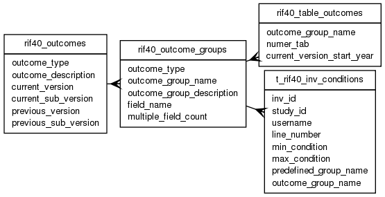

| Table: rif40.rif40_outcome_groups | |||
| Collection of Health outcomes into logical groups. E.g. Single variable ICD9 and 10 | |||
| Size: medium, Select frequency: medium, Update frequency: medium | |||
| Columns | |||
| Name | Type | Constraints | Description |
| outcome_type | VARCHAR (20) | NOT NULL | Outcome type: ICD, ICD-0 or OPCS |
| outcome_group_name | VARCHAR (30) | NOT NULL | Outcome Group Name. E.g SINGLE_VARIABLE_ICD |
| outcome_group_description | VARCHAR (250) | NOT NULL | Outcome Group Description. E.g. "Single variable ICD" |
| field_name | VARCHAR (30) | NOT NULL | Outcome field name, e.g. ICD_SAHSU_01, ICD_SAHSU |
| multiple_field_count | SMALLINT | NOT NULL | Outcome Group multiple field count (0-99). E.g if NULL then field is ICD_SAHSU_01; if 20 then fields are ICD_SAHSU_01 to ICD_SAHSU_20. Field numbers are assumed to tbe left padded to 2 characters with "0" and preceeded by an "_" |
| Primary key | |||
| Name | Columns | Description | |
| rif40_outcome_groups_pk | outcome_group_name | ||
| Foreign keys | |||
| Name | Columns | Referenced table | Description |
| rif40_outcome_groups_type_fk | outcome_type | rif40_outcomes | |
| Incoming foreign keys | |||
| Name | Columns | Referencing table | Description |
| rif40_outcome_group_name_fk | outcome_group_name | rif40_table_outcomes | |
| t_rif40_inv_conditons_ogn | outcome_group_name | t_rif40_inv_conditions | |
| Grants | |||
| Role | Actions | ||
| rif_manager | select, insert, delete, update | ||
| rif40 | select, references, insert, delete, update | ||
| PUBLIC | select | ||
